Brittany edition · 14 November 2026
Learn how to transform vector geometries and attach spatial attributes using three adjoining departments: Côtes-d’Armor (22), Ille-et-Vilaine (35), and Morbihan (56). Run the steps in order from the project root. Each result below was produced by executing the displayed R code.
Data and learning goals
The department boundaries are official 2026 generalized contours (100 m). The regular points constructed below are exercise locations, not observations of soils, mines or geology. You will learn to inspect a CRS, dissolve polygons, create buffers, compare overlays, select points and export a checked spatial join.
Complete R script · Boundary GeoJSON · Data source and licence
Prerequisite: install terra with install.packages("terra"). See the R installation help.
Locate the three departments
Boundaries: Contours administratifs 2026, IGN-derived, generalized 100 m, ODbL. Background maps need an Internet connection. The R map in step 5.1 remains available without background tiles.
5.1 · Load and inspect the three departments
Read the official boundaries, then use Lambert-93 so distances and areas are expressed in metres and square metres.
R code
library(terra)
dept <- vect("data/vectors/brittany-adjacent-departments.geojson")
dept <- project(dept, "EPSG:2154")
dept <- makeValid(dept)
dept <- dept[order(dept$code), ]
stopifnot(nrow(dept) == 3, all(is.valid(dept)))
print(as.data.frame(dept)[, c("code", "nom")])
print(crs(dept, describe = TRUE))
plot(dept, "nom", col = c("#a7d38d", "#e4a07a", "#9ca9d4"),
main = "Three adjoining Brittany departments", plg = list(cex = 0.8))Why these functions? · R help
all()— Require every polygon to pass its validity check. In R:help("all", package = "base")as.data.frame()— Inspect the attribute table separately from its geometry. In R:help("as.data.frame", package = "base")c()— Collect field names, labels and colours into vectors. In R:help("c", package = "base")crs()— Inspect the coordinate reference system of the department layer. In R:help("crs", package = "terra")is.valid()— Check polygon validity after topology repair. In R:help("is.valid", package = "terra")library()— Load terra so its spatial functions are available. In R:help("library", package = "base")list()— Group overlay results or plotting settings by name. In R:help("list", package = "base")makeValid()— Repair polygon topology before overlay operations; generalized contours can contain invalid geometries. In R:help("makeValid", package = "terra")nrow()— Count spatial features or attribute-match rows. In R:help("nrow", package = "base")order()— Keep departments and colours in code order. In R:help("order", package = "base")plot()— Display polygon geometry and its attributes on a map. In R:help("plot", package = "terra")print()— Display numerical results and checks alongside the maps. In R:help("print", package = "base")project()— Transform the department coordinates to Lambert-93 for metre-based operations. In R:help("project", package = "terra")stopifnot()— Stop if a CRS, identifier, feature-count or geometry-preservation check fails. In R:help("stopifnot", package = "base")vect()— Read boundary files or turn a coordinate table into a spatial point layer. In R:help("vect", package = "terra")
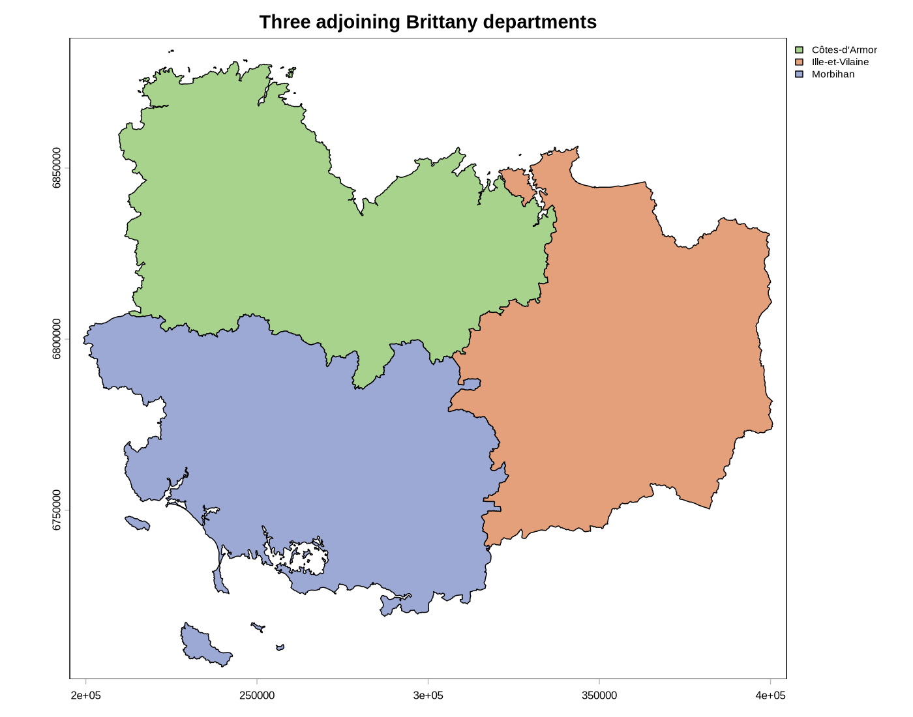
Executed R console output
code nom
1 22 Côtes-d'Armor
2 35 Ille-et-Vilaine
3 56 Morbihan
name authority code
1 ETRS89-FRA [RGF93 v1] / Lambert-93 EPSG 2154
area
1 France - onshore and offshore, mainland and Corsica (France métropolitaine including Corsica)
extent
1 -9.86, 10.38, 41.15, 51.56
Each polygon is a department. The legend links its colour to its name. The coordinate reference system is EPSG:2154 (Lambert-93).
5.2 · Measure and dissolve polygons
Calculate department areas, then dissolve internal boundaries to obtain one study-area feature.
R code
dept$area_km2 <- expanse(dept, unit = "km")
print(as.data.frame(dept)[, c("code", "nom", "area_km2")])
area <- aggregate(dept)
print(nrow(area))
plot(area, col = "#dcebcf", main = "Dissolved study area")
lines(dept, col = "#687563", lty = 2)
add_legend("topright", cex = 0.7, legend = c("Study area", "Original department borders"),
fill = c("#dcebcf", NA), border = c("black", NA),
lty = c(NA, 2), col = c(NA, "#687563"), bty = "n")Why these functions? · R help
add_legend()— Add a readable colour key to the spatial map using its plotted extent. In R:help("add_legend", package = "terra")aggregate()— Dissolve internal department boundaries into one study-area feature. In R:help("aggregate", package = "terra")as.data.frame()— Inspect the attribute table separately from its geometry. In R:help("as.data.frame", package = "base")c()— Collect field names, labels and colours into vectors. In R:help("c", package = "base")expanse()— Calculate polygon areas in square kilometres. In R:help("expanse", package = "terra")lines()— Draw department and buffer boundaries over the map. In R:help("lines", package = "graphics")nrow()— Count spatial features or attribute-match rows. In R:help("nrow", package = "base")plot()— Display polygon geometry and its attributes on a map. In R:help("plot", package = "terra")print()— Display numerical results and checks alongside the maps. In R:help("print", package = "base")
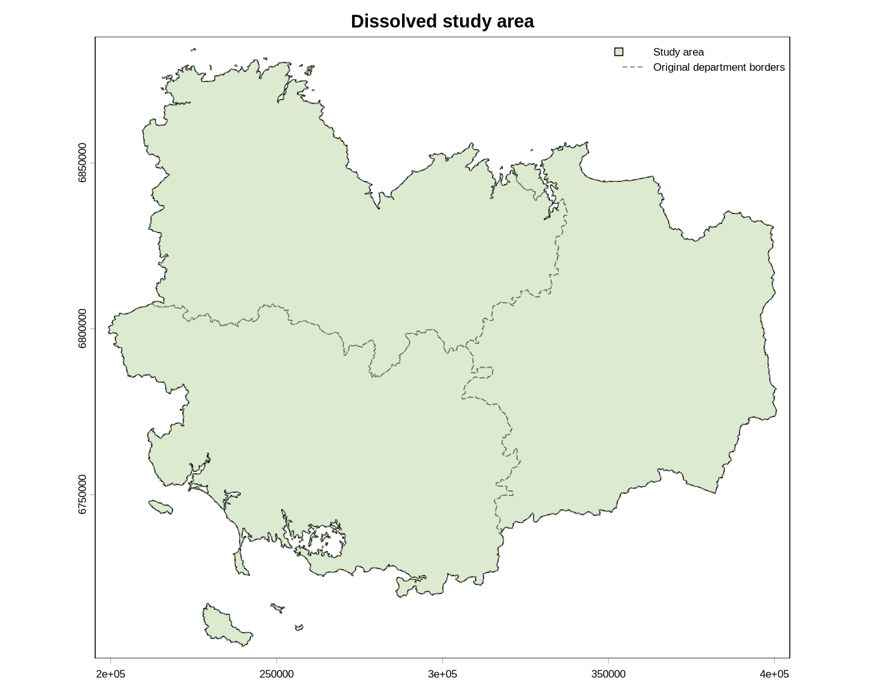
Executed R console output
code nom area_km2 1 22 Côtes-d'Armor 6981.209 2 35 Ille-et-Vilaine 6838.181 3 56 Morbihan 6878.818 [1] 1
Dissolving gives one feature, potentially with several parts and islands. The dashed lines show the original borders for comparison; they are no longer boundaries between output features.
5.3 · Construct an exercise grid
Build a regular 20 km grid of points covering the study-area extent. These are teaching locations, not field measurements.
R code
grid <- rast(ext(dept), resolution = 20000, crs = crs(dept))
xy <- xyFromCell(grid, seq_len(ncell(grid)))
sites <- vect(data.frame(site_id = seq_len(nrow(xy)), x = xy[, 1], y = xy[, 2]),
geom = c("x", "y"), crs = crs(dept))
print(nrow(sites))
plot(dept, col = "#e8eddf", main = "Regular exercise points: 20 km spacing")
points(sites, pch = 21, bg = "#477aa4", cex = 0.75)
add_legend("topright", cex = 0.7, legend = "Exercise point (not a measurement)", pch = 21,
pt.bg = "#477aa4", bty = "n")Why these functions? · R help
add_legend()— Add a readable colour key to the spatial map using its plotted extent. In R:help("add_legend", package = "terra")c()— Collect field names, labels and colours into vectors. In R:help("c", package = "base")crs()— Inspect the coordinate reference system of the department layer. In R:help("crs", package = "terra")data.frame()— Present feature counts, overlay fields and selected-feature counts as tables. In R:help("data.frame", package = "base")ext()— Read layer bounds so selected and non-selected features share a complete map frame. In R:help("ext", package = "terra")ncell()— Count grid cells so every cell centre becomes one exercise point. In R:help("ncell", package = "terra")nrow()— Count spatial features or attribute-match rows. In R:help("nrow", package = "base")plot()— Display polygon geometry and its attributes on a map. In R:help("plot", package = "terra")points()— Draw point locations with colours and symbols explained by the legend. In R:help("points", package = "graphics")print()— Display numerical results and checks alongside the maps. In R:help("print", package = "base")rast()— Create the regular grid used to position exercise points. In R:help("rast", package = "terra")seq_len()— Generate consecutive identifiers for every grid cell or point. In R:help("seq_len", package = "base")vect()— Read boundary files or turn a coordinate table into a spatial point layer. In R:help("vect", package = "terra")xyFromCell()— Convert grid-cell numbers to their centre coordinates. In R:help("xyFromCell", package = "terra")
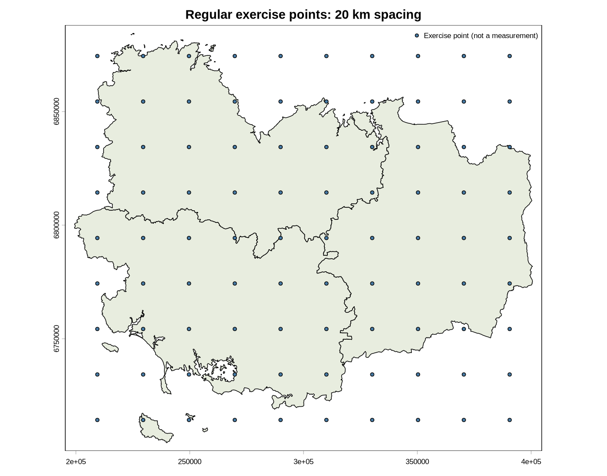
Executed R console output
[1] 90
Some points fall outside the polygons, including at sea. Retaining them lets us demonstrate spatial selection and missing values in a join.
5.4 · Select points using spatial predicates
Compare intersects, within and disjoint. A point on a polygon boundary intersects it but is not strictly within it.
R code
inside <- rowSums(relate(sites, dept, "intersects")) > 0
strict_inside <- rowSums(relate(sites, dept, "within")) > 0
outside <- rowSums(relate(sites, dept, "disjoint")) == nrow(dept)
print(data.frame(total = nrow(sites), intersects = sum(inside),
within = sum(strict_inside), outside_all = sum(outside)))
stopifnot(all(outside == !inside))
plot(dept, col = "#e8eddf", main = "Point selection: intersects the study area")
points(sites[!inside, ], pch = 1, col = "#778087", cex = 0.8)
points(sites[inside, ], pch = 21, bg = "#e5ad42", cex = 0.85)
add_legend("topright", cex = 0.7, legend = c("Selected", "Outside all departments"), pch = c(21, 1),
pt.bg = c("#e5ad42", NA), col = c("black", "#778087"), bty = "n")Why these functions? · R help
add_legend()— Add a readable colour key to the spatial map using its plotted extent. In R:help("add_legend", package = "terra")all()— Require every polygon to pass its validity check. In R:help("all", package = "base")c()— Collect field names, labels and colours into vectors. In R:help("c", package = "base")data.frame()— Present feature counts, overlay fields and selected-feature counts as tables. In R:help("data.frame", package = "base")nrow()— Count spatial features or attribute-match rows. In R:help("nrow", package = "base")plot()— Display polygon geometry and its attributes on a map. In R:help("plot", package = "terra")points()— Draw point locations with colours and symbols explained by the legend. In R:help("points", package = "graphics")print()— Display numerical results and checks alongside the maps. In R:help("print", package = "base")relate()— Evaluate a spatial predicate for each point–department pair. In R:help("relate", package = "terra")rowSums()— Combine the point-to-department logical matches across departments. In R:help("rowSums", package = "base")stopifnot()— Stop if a CRS, identifier, feature-count or geometry-preservation check fails. In R:help("stopifnot", package = "base")sum()— Count selected features or missing attribute values. In R:help("sum", package = "base")
Executed R console output
total intersects within outside_all 1 90 51 51 39
A point is outside the complete study area only if it is disjoint from every department. Being disjoint from one department alone is insufficient.
5.5 · Create a buffer around Ille-et-Vilaine
Select department 35 by its code and build a 15 km buffer. The buffer includes the original polygon and its surrounding zone.
R code
d35 <- dept[dept$code == "35", ]
buf <- buffer(d35, width = 15000)
ring <- erase(buf, d35)
print(data.frame(department_km2 = expanse(d35, unit = "km"),
buffer_km2 = expanse(buf, unit = "km"),
outer_ring_km2 = sum(expanse(ring, unit = "km"))))
plot(buf, col = "#f5dc9d", main = "Ille-et-Vilaine and its 15 km buffer")
polys(d35, col = "#e4a07a")
lines(dept, col = "#526358", lty = 2)
add_legend("topright", cex = 0.7, legend = c("Department 35", "Buffer extension"),
fill = c("#e4a07a", "#f5dc9d"), bty = "n")Why these functions? · R help
add_legend()— Add a readable colour key to the spatial map using its plotted extent. In R:help("add_legend", package = "terra")buffer()— Expand department 35 by a distance of 15,000 metres. In R:help("buffer", package = "terra")c()— Collect field names, labels and colours into vectors. In R:help("c", package = "base")data.frame()— Present feature counts, overlay fields and selected-feature counts as tables. In R:help("data.frame", package = "base")erase()— Subtract department geometry from lithology polygons. In R:help("erase", package = "terra")expanse()— Calculate polygon areas in square kilometres. In R:help("expanse", package = "terra")lines()— Draw department and buffer boundaries over the map. In R:help("lines", package = "graphics")plot()— Display polygon geometry and its attributes on a map. In R:help("plot", package = "terra")polys()— Add output polygons to an existing context map. In R:help("polys", package = "terra")print()— Display numerical results and checks alongside the maps. In R:help("print", package = "base")sum()— Count selected features or missing attribute values. In R:help("sum", package = "base")
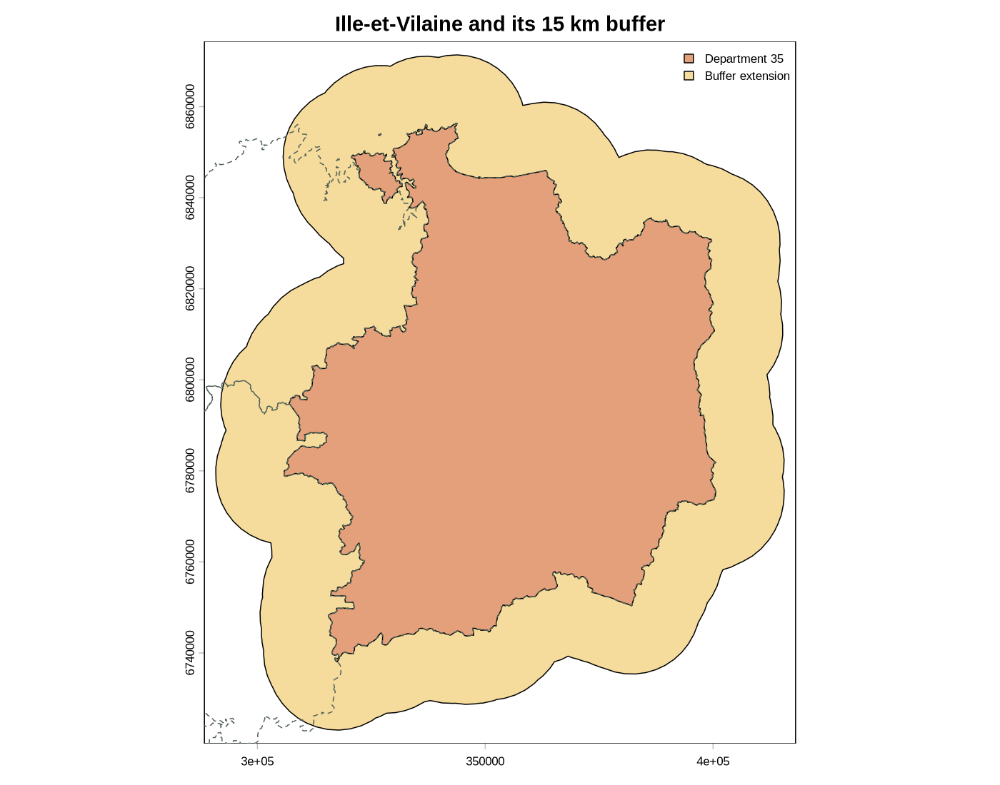
Executed R console output
department_km2 buffer_km2 outer_ring_km2 1 6838.181 13955.94 7117.758
The width is 15,000 metres because the input is projected. Erasing the department from its buffer isolates the outer ring.
5.6 · Compare six polygon overlays
Use the same inputs in six operations. The first input contains departments 22 and 56; the second is the buffer around department 35.
R code
neighbours <- dept[dept$code != "35", ]
overlays <- list(
Intersect = intersect(neighbours, buf),
Erase = erase(neighbours, buf),
Crop = crop(neighbours, buf),
Union = union(neighbours, buf),
Cover = cover(neighbours, buf),
Symmetric_difference = symdif(neighbours, buf)
)
print(data.frame(operation = names(overlays),
features = sapply(overlays, nrow)))
view <- union(ext(dept), ext(buf)) * 1.08
for (operation in names(overlays)) {
plot(dept, ext = view, col = "#f2f3ef", main = gsub("_", " ", operation))
polys(overlays[[operation]], col = "#e5ad42", border = "#4f594b")
lines(buf, col = "#2e729d", lwd = 2)
add_legend("topright", cex = 0.7, legend = c("Output geometry", "Buffer boundary", "Context"),
fill = c("#e5ad42", NA, "#f2f3ef"),
border = c("#4f594b", NA, "black"),
lty = c(NA, 1, NA), col = c(NA, "#2e729d", NA), bty = "n")
}Why these functions? · R help
add_legend()— Add a readable colour key to the spatial map using its plotted extent. In R:help("add_legend", package = "terra")c()— Collect field names, labels and colours into vectors. In R:help("c", package = "base")cover()— Replace overlapping areas of the first polygon layer with polygons from the second. In R:help("cover", package = "terra")crop()— Clip the first polygon layer to the second layer while retaining first-layer attributes. In R:help("crop", package = "terra")data.frame()— Present feature counts, overlay fields and selected-feature counts as tables. In R:help("data.frame", package = "base")erase()— Subtract department geometry from lithology polygons. In R:help("erase", package = "terra")ext()— Read layer bounds so selected and non-selected features share a complete map frame. In R:help("ext", package = "terra")gsub()— Replace underscores with spaces in figure titles. In R:help("gsub", package = "base")intersect()— Keep shared polygon areas and combine the input attributes. In R:help("intersect", package = "terra")lines()— Draw department and buffer boundaries over the map. In R:help("lines", package = "graphics")list()— Group overlay results or plotting settings by name. In R:help("list", package = "base")names()— Read operation names or the attribute fields retained by an output. In R:help("names", package = "base")plot()— Display polygon geometry and its attributes on a map. In R:help("plot", package = "terra")polys()— Add output polygons to an existing context map. In R:help("polys", package = "terra")print()— Display numerical results and checks alongside the maps. In R:help("print", package = "base")sapply()— Count features in each overlay result. In R:help("sapply", package = "base")symdif()— Keep areas belonging to either polygon layer but exclude their shared area. In R:help("symdif", package = "terra")union()— Combine polygon footprints and shared attributes, or combine map extents. In R:help("union", package = "terra")
Intersect
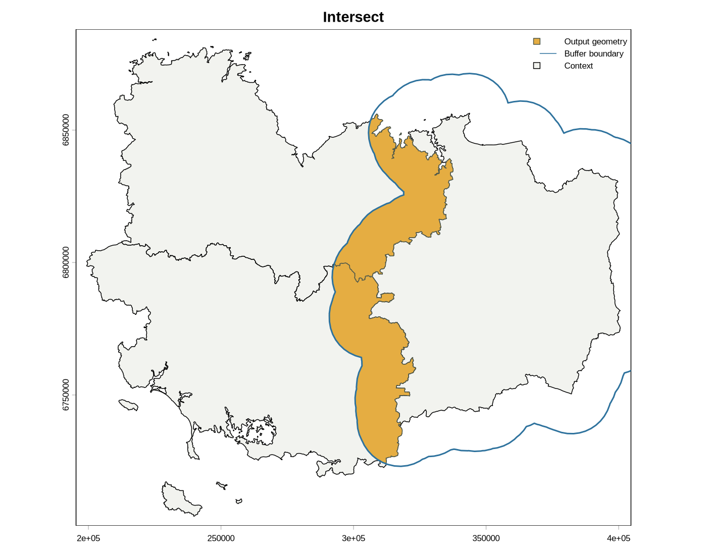
Erase
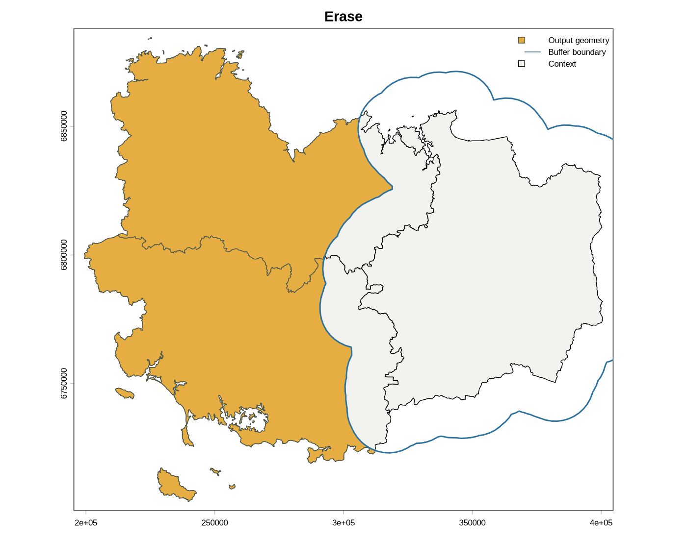
Crop
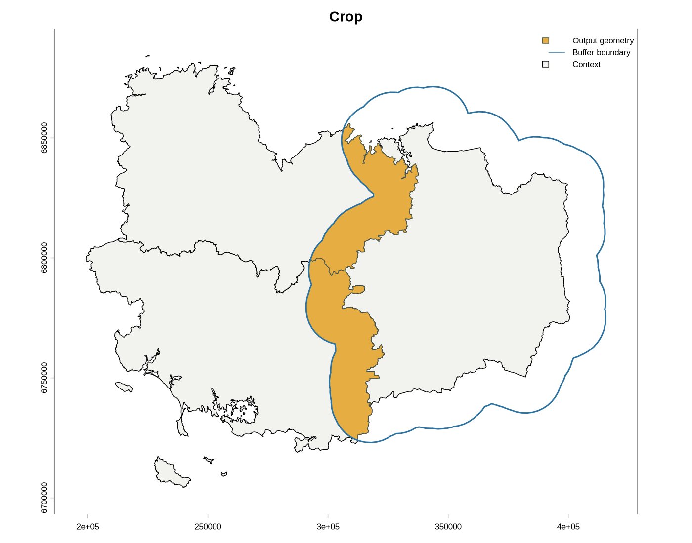
Union
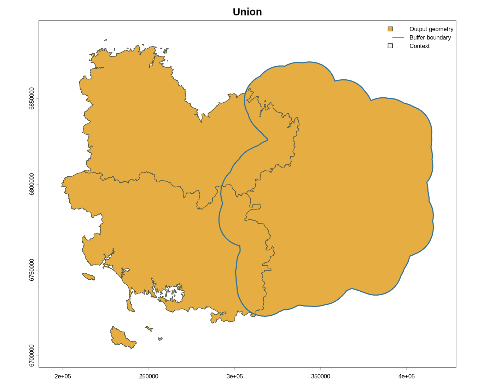
Cover
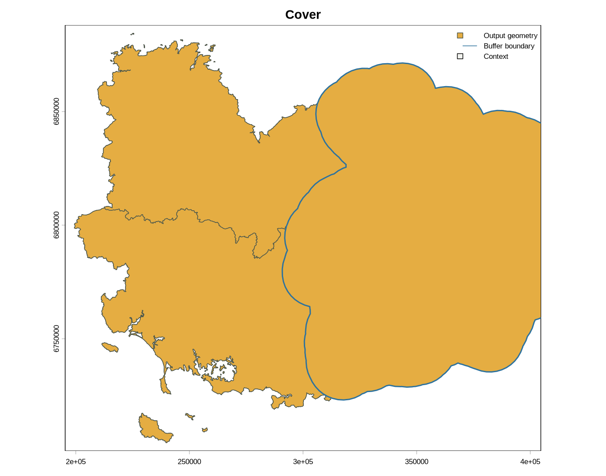
Symmetric difference
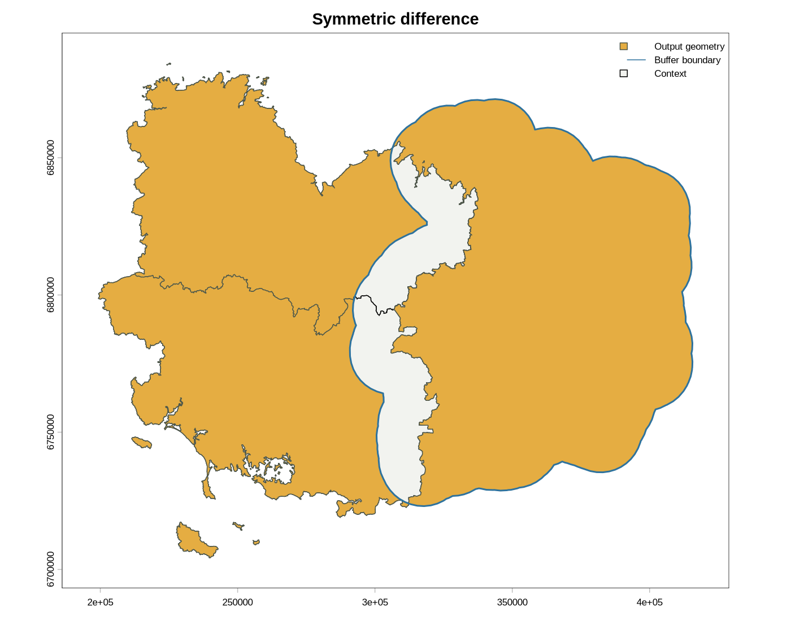
Executed R console output
operation features Intersect Intersect 2 Erase Erase 2 Crop Crop 2 Union Union 5 Cover Cover 3 Symmetric_difference Symmetric_difference 3
Intersect retains the common area and combines attributes. Erase removes the second input from the first. Crop clips the first input. Union partitions both inputs. Cover replaces covered parts of the first input with the second. Symmetric difference retains areas belonging to exactly one input.
5.7 · Join department attributes to points
Extract the intersecting department for each point. Match explicit point IDs so the original point order is preserved.
R code
hits <- extract(dept[, c("code", "nom")], sites)
stopifnot(!anyDuplicated(hits$id.y))
matched <- hits[match(seq_len(nrow(sites)), hits$id.y), ]
joined <- sites
joined$department_code <- matched$code
joined$department_name <- matched$nom
stopifnot(nrow(joined) == nrow(sites),
identical(crds(joined), crds(sites)))
print(table(joined$department_code, useNA = "ifany"))
plot(dept, col = "#f2f3ef", main = "Department attributes joined to exercise points")
cols <- c("22" = "#74a454", "35" = "#db8a5c", "56" = "#7d8bbd")
for (code in names(cols)) {
selected <- which(joined$department_code == code)
points(joined[selected, ], pch = 21, bg = cols[[code]], cex = 0.85)
}
points(joined[is.na(joined$department_code), ], pch = 1, col = "#778087")
add_legend("topright", cex = 0.7, legend = c("22", "35", "56", "No match"), pch = c(21, 21, 21, 1),
pt.bg = c(cols, NA), col = c("black", "black", "black", "#778087"), bty = "n")Why these functions? · R help
add_legend()— Add a readable colour key to the spatial map using its plotted extent. In R:help("add_legend", package = "terra")anyDuplicated()— Detect multiple polygon matches for a point before attaching attributes. In R:help("anyDuplicated", package = "base")c()— Collect field names, labels and colours into vectors. In R:help("c", package = "base")crds()— Read the point coordinates for a geometry-preservation check. In R:help("crds", package = "terra")extract()— Find the department attributes intersecting each exercise point. In R:help("extract", package = "terra")identical()— Verify that adding attributes did not change the point coordinates. In R:help("identical", package = "base")is.na()— Identify exercise points without a department match. In R:help("is.na", package = "base")match()— Align extracted attributes to the original point IDs. In R:help("match", package = "base")names()— Read operation names or the attribute fields retained by an output. In R:help("names", package = "base")nrow()— Count spatial features or attribute-match rows. In R:help("nrow", package = "base")plot()— Display polygon geometry and its attributes on a map. In R:help("plot", package = "terra")points()— Draw point locations with colours and symbols explained by the legend. In R:help("points", package = "graphics")print()— Display numerical results and checks alongside the maps. In R:help("print", package = "base")seq_len()— Generate consecutive identifiers for every grid cell or point. In R:help("seq_len", package = "base")stopifnot()— Stop if a CRS, identifier, feature-count or geometry-preservation check fails. In R:help("stopifnot", package = "base")table()— Summarise mine counts by department or lithology, including missing matches. In R:help("table", package = "base")which()— Find the point rows belonging to a department. In R:help("which", package = "base")
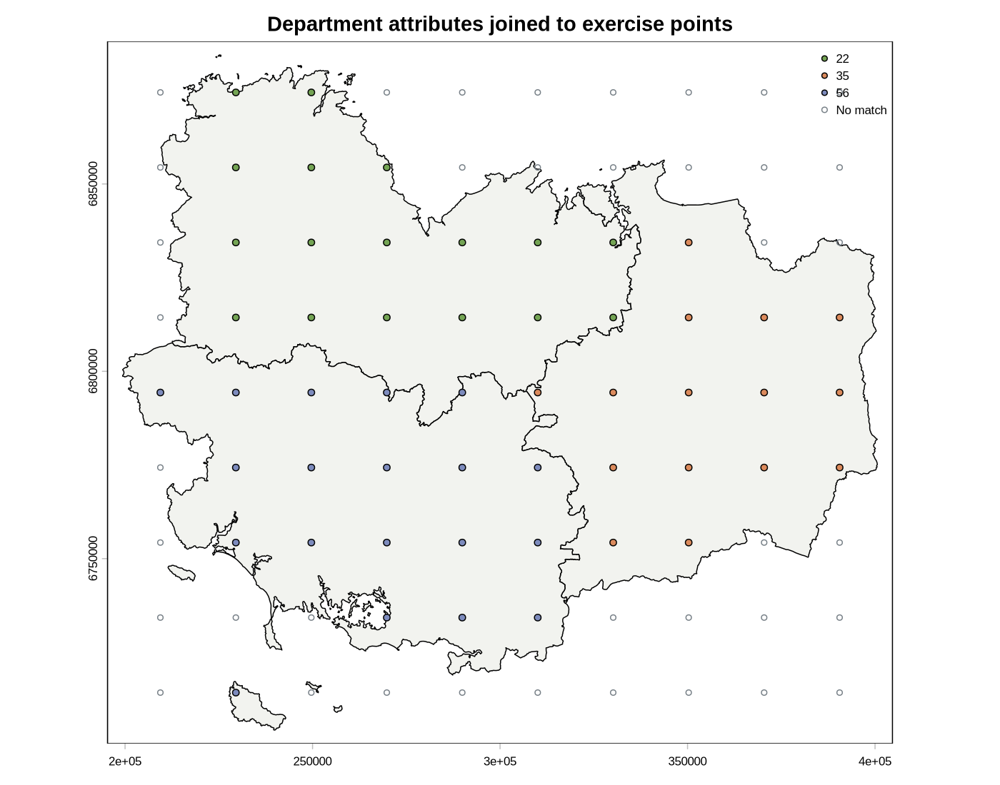
Executed R console output
22 35 56 <NA> 17 15 19 39
A missing department value means that no polygon matched the point. It is not a measured missing value. This example stops if a point matches multiple departments; a real application must choose how to handle boundary matches.
5.8 · Summarise and export the results
Count exercise points per department and save reusable spatial files and a simple table.
R code
counts <- as.data.frame(table(joined$department_code))
names(counts) <- c("department_code", "exercise_points")
print(counts)
dir.create("outputs/module-05-brittany", recursive = TRUE, showWarnings = FALSE)
writeVector(joined, "outputs/module-05-brittany/exercise-points.gpkg", overwrite = TRUE)
writeVector(area, "outputs/module-05-brittany/study-area.gpkg", overwrite = TRUE)
write.csv(counts, "outputs/module-05-brittany/point-counts.csv", row.names = FALSE)
check <- vect("outputs/module-05-brittany/exercise-points.gpkg")
stopifnot(nrow(check) == nrow(joined), same.crs(check, joined))
barplot(counts$exercise_points, names.arg = counts$department_code,
col = c("#74a454", "#db8a5c", "#7d8bbd"),
xlab = "Department code", ylab = "Number of exercise points",
main = "Regular grid points inside each department")Why these functions? · R help
as.data.frame()— Inspect the attribute table separately from its geometry. In R:help("as.data.frame", package = "base")barplot()— Compare exercise-point counts between departments. In R:help("barplot", package = "graphics")c()— Collect field names, labels and colours into vectors. In R:help("c", package = "base")dir.create()— Create the output directory before writing results. In R:help("dir.create", package = "base")names()— Read operation names or the attribute fields retained by an output. In R:help("names", package = "base")nrow()— Count spatial features or attribute-match rows. In R:help("nrow", package = "base")print()— Display numerical results and checks alongside the maps. In R:help("print", package = "base")same.crs()— Verify that spatial inputs and reopened exports use compatible reference systems. In R:help("same.crs", package = "terra")stopifnot()— Stop if a CRS, identifier, feature-count or geometry-preservation check fails. In R:help("stopifnot", package = "base")table()— Summarise mine counts by department or lithology, including missing matches. In R:help("table", package = "base")vect()— Read boundary files or turn a coordinate table into a spatial point layer. In R:help("vect", package = "terra")write.csv()— Save the department summary as a table readable outside R. In R:help("write.csv", package = "utils")writeVector()— Save spatial geometry, attributes and CRS in a reusable GeoPackage. In R:help("writeVector", package = "terra")
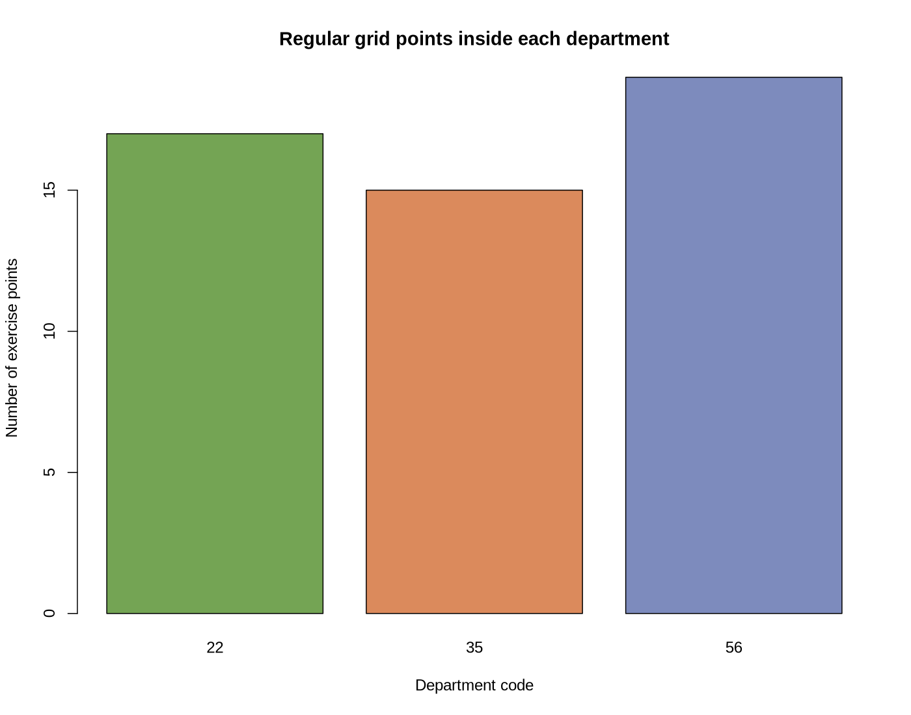
Executed R console output
department_code exercise_points 1 22 17 2 35 15 3 56 19
GeoPackage preserves geometry, attributes and the coordinate reference system. CSV saves the summary table only. Grid-point counts depend on spacing and grid origin; they do not estimate an environmental variable.
Practice
Change the grid spacing to 10,000 m, then rerun from step 5.3. Predict which counts will change. Next, change the buffer width to 5,000 m and compare the six overlay results.
What should you observe?
A finer grid creates more exercise points; their counts depend on grid placement as well as department area. A narrower buffer reduces its reach into the neighbouring departments. The exact numbers must come from your R execution. The official department boundaries themselves remain the same.